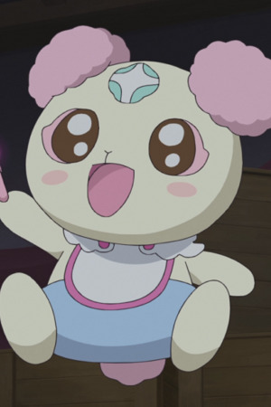
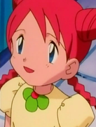

|  |
Chiffon |
- Fresh Pretty Cure!
- Pretty Cure All Stars Movie DX: Minna Tomodachi Kiseki no Zenin Daishuugou
- Fresh Pretty Cure! Movie: The Kingdom of Toys has Lots of Secrets!?
- Pretty Cure All Stars Movie DX2: Kibou no Hikari Rainbow Jewel o Mamore
- Pretty Cure All Stars Movie DX3: Reach the Future! The Rainbow Flower that Connects the World
- Pretty Cure All Stars New Stage: Future Friends
- Hugtto! Pretty Cure
|
Chiffon is a baby fairy from Kingdom of Sweets. Chiffon uses espers power(ESP), which involves her using magic with a green aura. Chiffon is aslo called Infinity, a god-like entity(the limitless memory). Most of the time, she extremely cheerful and playful. However, Chiffon is shown to be very sensitive. |
| |
Frosch |
- Fairy Tail
- Fairy Tail (2014)
- Fairy Tail: Final Season
|
Frosch is Rogue Cheney's exceed. Frosch easily agrees with Lector's opinion. He has a happy-go-lucky personality. He is fond of Yukino, Rogue and Lector. |
|  |
Marissa |
|
Marissa is the younger sister of Mateo. She is a sweet girl who looks up to her older brother and believes in her brother. She is always willing to help her brother. |
 |
Mew |
- Pokemon Movie 8: Lucario and The Mystery of Mew
- Pokemon: Mewtwo Returns
- Pokemon: The Mastermind of Mirage Pokemon
|
Mew is a Mythical Pokemon from the Kanto region. Mew is incredibly adaptable, able to travel freely in the air or underwater. It is intelligence, curiosity, playfulness, and even selflessness. |
| |
Natalie |
|
Natalie is a fellow Dragoon who knows Zefiris, and took part in the Genesis War. She lost most her powers. Her personality is cold and unfeeling. She inhabits an ancient battle-vechicle, the Skid. |
 |
Nina Tucker |
|
Nina Tucker was the daughter of Shou Trucker. She was happy, cheerful and excitable young girl. |
| |
Rita |
|
Rita, along with Sue, is one youngest residents of Diglett Village. She is the part of residents that "invaded" the village to check up on her and Sue grandparents. |
| |
Sumono |
|
Sumono is the second-oldest sister of the Kimono Sister. She, like her sisters, are sincere and kind. |
 |
Bayleef |
- Pokemon
- Pokemon Chronicles
|
Bayleef is a Pokemon from the Johto region. It evolves from the grass starter, Chikorita. Bayleef's fragrance has a combination of energizing, stimulating, and healing effects. Satomi Koorogi voiced Casey's Bayleef. |
 |
Chikorita |
|
Chikorita is a Pokemon from the Johto region. Chikorita is a grass starter for Johto. Chikorita uses its leaf to determine the temperature and humidity of the surrounding air. Satomi Koorogi voiced Casey's Chikorita. |
 |
Pikachu |
- Pokemon
- Pokemon Chronicles
|
Pikachu is the main Pokemon in all of Pokemon. Pikachu is from the Kanto region and the evolved form of Pichu. Pikachu can recharge each other with their build up energy. Satomi Koorogi voiced Ritchie's Pikachu. |
 |
Piplup |
- Pokemon Diamond and Pearl
|
Piplup is one of the starters of the Sinnoh region. Piplup has a strong sense of self-pride. Piplup has weak walking ability. Satomi Koorogi voiced Tyler's Piplup. |
| |
Togepi |
- Pokemon
- Pokemon Movie 1: The First Movie
- Pokemon: Pikachu's Rescue Adventure
- Pokemon Movie 2: The Power of One
- Pokemon: Pikachu's Winter Vacation
- Pokemom Movie 3: Spell of the Unknown
- Pokemon: Pikachu's Winter Vacation
- Pokemon: Pikachu and Pichu
- Pokemon Movie 4: Pokemon 4Ever
- Pokemon: Pikachu's Winter Vacation 2000
- Pokemon: Pikachu's Pikaboo
- Pokemon: Pikachu's Winter Vacation 2001
- Pokemon Movie 5: Heroes - Latias and Latios
- Pokemon Advanced Generations
|
Togepi is a Pokemon from the Johto region. Topegi is able to release poison from the spikes on its head. Togepi is a sign of good luck. Satomi Koorogi voiced Misty's Togepi. |
 |
Togetic |
- Pokemon Advanced Generations
|
Togetic is a Pokemon from the Johto region. It evolves from Togepi. Togetic can sense the kindess in other people and Pokemon's hearts. Satomi Koorogi voiced Misty's Togetic. |
 |
Umbreon |
- Pokemon
- Pokemon Chronicles
- Pokemon Diamond and Pearl
|
Umbreon is a Pokemon from the Johto region. Umbreon is an evolved form of Eevee. When it gets agitated, it can release a poisonous sweat. Satomi Koorogi voiced Gray's and Tamao's Umbreon.
|